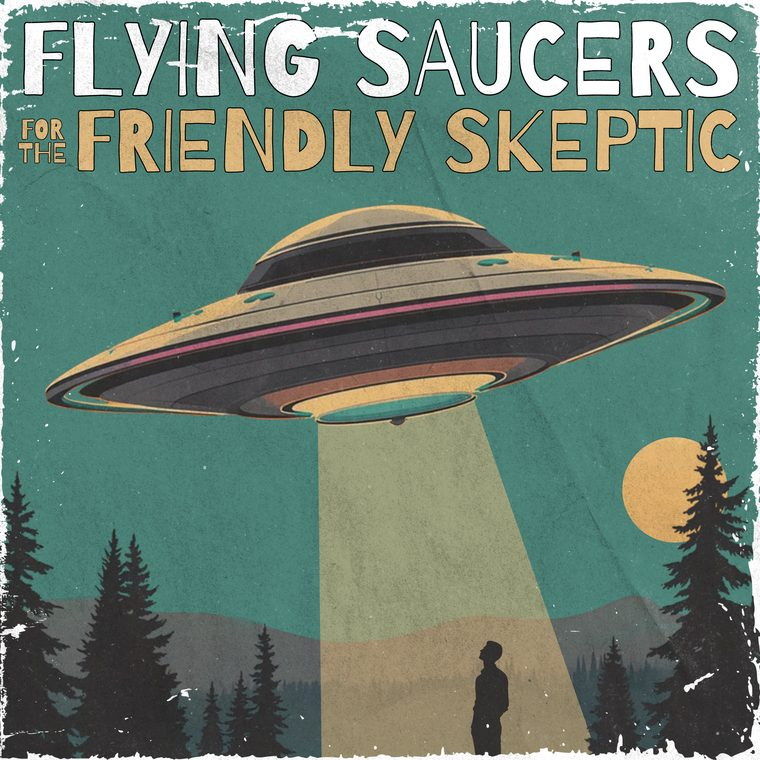

Listen nowUFOs & UAP for beginners
Flying Saucers for the Friendly Skeptic
Curious about flying saucers but not sure what to believe? Explore the cases, the timeline, a map of every sighting and the declassified files, at your own pace.
Start exploring →- Numerous sources
- A map of every sighting
- Primary sources first